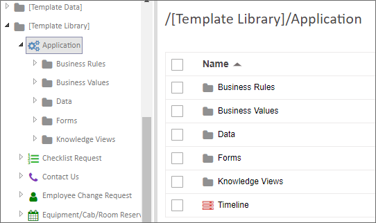
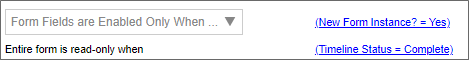
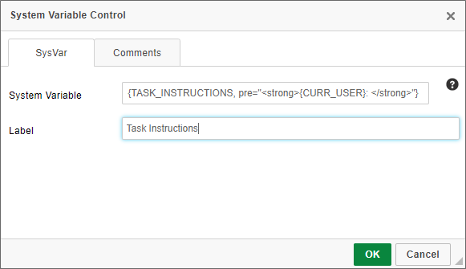
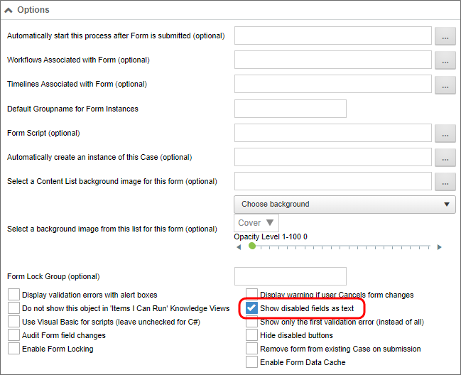
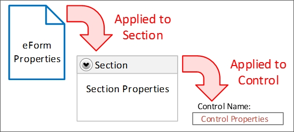

Best Practices for Implementations
There are a number of Best Practices that you should incorporate into your implementation projects. Following these guidelines will make your implementations work more smoothly, be easier to maintain, and will enable you to make necessary changes more quickly, as personnel or processes change and evolve. In addition to these best practices, you should also familiarize yourself with the basic design concepts that are explained in the Getting Started Guide, which also contains step-by-step instructions to build a generic application. Finally, a standalone Best Practices PDF file has been compiled from the Implementer/System Administrator guides.
General
- When you delete a form instance, ensure that you delete the corresponding Process Timeline instance as well.
- Always attach objects as Process references instead of Form references, except in those cases where a form-specific attachment is required. Always use a Group Name for attachments. The Group Name is the only reliable handle we have for selecting attached objects.
- As a general rule, you should create only one Datasource per database back end, and reuse that Datasource for all relevant implementation projects. Only create multiple Datasources when a) you are pointing to two or more databases, or b) You want to specifically restrict a Datasource to specific objects. For example, you might create a Datasource with a smaller subset of tables for use in a specific project, to ensure a class of users don't have access to more sensitive tables that might be included in the main Datasource.
- Organize Datasources in root folders of the partition, separate from any implementation folders, so that implementers don't have to export Datasources when the implementation is exported from development to production. Exports and Imports are name-based, and relative folder position-based. Consequently, the root folder containing database sources should be mirrored on development and production servers, so that both the names and relative folder positions are exactly the same in both environments. If the mirroring is correct, implementations will be imported/exported between development and production without losing contact with the Datasources.
- When creating conditions that require a specific value, use the "equals" (=) condition rather than the "contains" condition when possible. Only use 'contains' when a null value is desired as a return proxy for "show me everything" When building conditions testing matching strings, think hard about when to use “=” versus “contains”. Note that if the right hand side of the condition is blank, then “contains” will match all strings, whereas “=” will match none. If you're building a condition, for example, testing the result of a Process Timeline Activity, and the result might be “Accept” or “Do Not Accept”, then using a condition like “contains ‘accept’” will match either result—probably not what you intended. So it’s also a good idea to avoid results that are substrings of one another, like "Approve" and "Disapprove".
- When configuring Process Timeline activities, enter actual instructions in the Instructions property, and descriptions into the Description property.
- When creating new applications, place all of the application's objects, i.e., Forms, Process Timelines, etc., into a single parent folder. This makes importing/exporting applications between development and production environments much easier, as described in the Importing/Exporting Content topic of the Implementer's guide.
- Create an application stub in the Template Library that contains all of the base objects you'd normally create for any new application, e.g., a Form and Process Timeline that are correctly linked, along with a default email template. This enables you to provide all of the initial applications objects, along with any desired Form styling or layout, to enable all new applications to inherit a desired look and feel. This stub should also include the common organizational folders for applications objects, such as Knowledge Views, Forms, etc. Create new applications directly from this stub. The example below shows an application stub built into the Template Library.

- Organize the Content List by application, rather than by object type, with a single parent folder named for each application. Keep the application's Form and Process Timeline directly in the parent folder, and create subfolders as needed for Knowledge Views, Business Rules, dashboards, and similar objects. You can then export the parent folder and all of its contents in one step. The parent folder is also the unit you version, as described in the Versioning section.
- In addition to a linked Form, Process Timeline, and default email template, an application stub in the Template Library can include the three standard Form fields, validation rules that apply to all Forms, and a Process Timeline with an activity that sets the request number, an approval loop with consistent results, and a final disposition notification. Give the template application a distinctive icon and a brief description, since descriptions appear in the Content List.
Email Templates
- As a guideline, use fewer email templates by using conditional sections and multiple email data controls, when applicable.
- Use system variables to display activity names, instructions, and descriptions, rather than hard-coding them in the body of the email, so that little customization has to be done to the email template.
- Configure a default email template in the Process Timeline definition. You can override it and use a different email template if a particular Timeline Activity requires it, by configuring the Using Email Template property on the activity's Notifications tab.
- Use the
{EMAIL USER} System Variable to specify the email recipient instead of {CURR_USER}. Email messages do not have a Current User context.
- On Forms, use the System Variable Control rather than typing System Variables as text into the Online Form Designer. IT makes the Form's design look cleaner, and protects against inadvertent editing of the System Variable name.
- Always set the Workflow from email address global variable to a dedicated email account. If that account isn't monitored, add a note to your email templates telling recipients not to reply. When recipients are likely to reply, consider overriding the from address and display name in the template's Email Data control, so that replies reach a person.
- Use sections with mutually exclusive visibility conditions, such as the running activity name, to show different messages from one template. A section can also cancel the email for a specific recipient.
- When recipients need the process's documents, add the process attachments to the email.
Development/Testing
- Your Development and Staging systems should be near-replicas of your productions system, including the same users, Meta Data, etc. Global objects, such as Datasource objects should have the same names, and be in the same folder locations on all environments, though they may not be otherwise configured the same. For instance, an "Employee" datasource might connect to real-time data in an employee database on the production system, but a sanitized database on a development system. But, as long as the two objects have the same name, and are stored in the same file location on both servers, imported applications that refer to these objects will import correctly, and return the appropriate data on each system.
- Datasource objects, by the way, should not be imported between systems. They should be manually created on each system.
- When developing, use real users as assignees for Timeline activities. In testing, use impersonation to perform the assignees' tasks. Do not assign tasks to yourself, as you need to see the process as the actual assignees will see the process.
- In field properties for Process Timeline activities, enter actual instructions in the Instructions field, and descriptions into the Description field. (Remember, somebody else might be modifying this project after you—help them out!)
- When you delete a form instance, ensure that you delete the corresponding Process Timeline instance and vice versa. Failure to do leaves orphaned objects in Process Director, i.e., Form instances without their Timelines. All related instance objects need to be deleted together.
- You shouldn't ever perform testing in the production environment, except in unusual circumstances. Applications should be rigorously tested in the development environment before being imported to Production.
- Environment parity includes the Content List structure and the users and groups your applications reference for task assignment and permissions. Production will have stricter permissions and a different set of administrators than development or staging.
- Build applications on the development server, and import finished work into production. If you ever make a quick change directly on production, make the identical change on development immediately, and create a version on production. Otherwise, the next import from development brings back the error you already corrected on production.
- Import complex applications in dependency order: new Meta Data first, then any new users and groups, then global objects such as Dropdown objects or Business Values, then the application folder, and workspaces last. A workspace almost always points to a specific object, such as a Knowledge View, and its import fails if that object doesn't yet exist. If you import out of order, import the missing item, then re-import the application.
Forms
- Use meaningful instance names for each form definition, by setting the Form definition's Instantiated Form Name property. By the same token, use simple, meaningful names for object and field definitions. Do not use Hungarian notation or other programming-style conventions. Names should be logical and recognizable. This is very helpful when the objects are used in other places, such as when defining conditions. Object names will appear sorted alphabetically.
- Think carefully about when the Form's data fields should be editable by users. There are two properties on the Properties tab of the Form definition that control this: Form Fields are Enabled Only When and Entire Form is read-only when. In general, Form fields should be enabled for new form instances, but disabled in all other contexts. If form information does need to be edited, specify the field that should be edited during the process, and when editing is to be allowed, via visibility conditions on the appropriate fields. Section controls are extremely helpful here, because you can place the editable controls in their own Section, and enable or disable the Section control to enable/disable its constituent controls. Similarly, once the process is complete, the entire Form should be set to read-only, so that it cannot be edited after the process has completed.

- When using tables to provide Form layout, be sure to set the Role attribute, as described here.
- Instructions should tell users to do something. For example, “Please review this form and approve or reject it using the buttons below”. Note that it’s nice to begin instructions with “Please”. Descriptions should explain something. Always use friendly names for form fields that are required, have validation rules associated with them, or may be used in Knowledge Views, so that Knowledge Views and other derived uses of the field display human-friendly field names. Keep in mind that Knowledge View column titles will use the friendly name, so brevity is important, as a friendly name like "This is the name of the user who filled out this form" might not be the best choice.
- Always add the assigned user and task instructions at the top of forms and email templates. In a task context; the easiest way to be sure of that is to use the System Variable control, and set it to use the Task Instructions System Variable, which only appears in that context. You can append the task user's name to the control by typing "
{curr_user}: " in the "Pre" formatter of the variable's attributes, as shown below.

- As a guideline, on each Form template, there should be three standard fields: the form submitter, submission date, and a unique request number. The three fields should be disabled for all users. In some cases, the submitter may be submitting on behalf of another user: those fields should be separate, so that the submitter is always automatically set (usually by setting its default value to Form Submitter), and the on-behalf-of user can be selected by the submitter using a user picker or other mechanism. The unique request number can be set via the use of the Sequence Number System Variable. It's best to set this value in the very first activity of the Process Timeline, so the Sequence Number is generated only after the Form has been submitted.
- When possible, choose the Show disabled fields as text option in the Form definition, which will render disabled fields as plain text, rather than disabled controls.

- Form control appearance logic can be complicated. The following rules should apply:
- Think about when form control appearance logic should be implemented within a Business Rule, rather than rather than explicitly defined within the field properties. As a rule of thumb, consider a Business Rule when there are three or more conditions controlling the field's appearance, or when the same appearance logic is used on multiple fields. This is true of task assignment in general as well. If you put the assigned user in a Business Rule, you can more easily find and change the user later, as users often change in the course of regular promotions and attrition. Don’t name the Business Rule after the person, but rather, the role the person plays in that Process.
- Do not tie a specific user to the appearance logic for a field unless absolutely necessary.
- Avoid using the "Step Running" condition for appearance logic, because the fields you desire to show or hide will only be shown or hidden while that specific activity is running. In all probability, the actual condition you wish to use is "Step Reached", because you wish the fields to be available when the process reaches a specific point, and at all points in the process thereafter. It’s very common to have form control logic (enabled/disabled, visible/hidden, required/optional) driven by the state of the process, and the context in which the user is viewing that form (i.e., whether the user is in a task or not). As a general guideline, use “Activity Reached” when you want appearance based on whether or not the process has reached a certain point, and use “Task Name =” when you want appearance based on whether the user is interacting with the form in the context of a specific task assigned to that user.
- Appearance logic is strongly driven by inheritance. Inheritance is the ability of a container control to automatically incorporate, or inherit, properties of its parent container control. In the case of Form controls, for example, the "required" and "enabled" properties are inherited. The Form is the highest-level container control, and every control on the form is a child control of the Form. A Section control placed onto a Form will inherit the properties of the Form, while an individual control placed inside of a Section control will, in turn, inherit the section's properties.

For example, if the Required property of a Section control is set to "true", then inheritance ensures that all of the controls contained in that section will be required. You can override inheritance, however, by explicitly setting the Required property of a control inside the section to "False". If there is conflict between the Required property of a container control, and the controls contained inside it, the control property at the lowest level wins, and overrides the inheritance. With the "lowest level wins" model of inheritance in mind:
- Disable forms when the form isn't a new instance, then enable individual sections as necessary for data input in succeeding activities.
- Do not use the Otherwise disabled or Otherwise enabled conditional appearance settings in field properties unless you specifically want to override the appearance logic for the parent container in all cases.
- Setting a control to "Otherwise Xxxxx" when the parent container has its own appearance logic can result in unexpected behavior when the parent container's appearance logic conflicts with that of the control.
- Label control values don't get saved to the database; therefore, labels should be used only to show text on forms. Label controls are display vehicles only; don’t try to use them in conditions, for example. When possible, associate each label with an Input control for Accessibility compliance.
- Hide debug sections and other development conventions in forms from the non-developer form users. Users should never see anything on a form that isn't relevant to the process on which they are working.
- The Routing Slip should appear below any user action buttons so that users don't have to scroll below the Routing Slip to perform their assigned task.
- Use the branch/result order properties to ensure that options are presented consistently to users throughout a process. approvals are always displayed first in the button areas.
- Logical field names are required for WCAG AA accessibility compliance. Because control names become database column names, they can contain only letters, numbers, dashes, and underscores, with no spaces, must be fewer than 64 characters, and must be unique within the Form.
- Each time a sequence number is generated it's used up, so generating the request number when the Form opens burns a number every time a user closes the Form without submitting it. The three standard fields give Knowledge Views reliable filters for a single request, a date range, or a submitter, and make a clear, searchable Instantiated Form Name.
- Use a standard order for the elements of every Form: the three standard fields at the top, Section controls holding the Form's content, a Signature Comments control below the last form field, a Button Area control directly below the Signature Comments control, and the Routing Slip at the very bottom. If a Form has no Button Area control, Process Director places the action buttons below the Routing Slip, which can grow very large on long processes.
- Configure approval activities so that a signature comment is required for negative results, such as Deny or a request for resubmission, but not for approval. People rarely need to know why a request was approved, but they do need to know why it was denied, and auditing, HR, or legal requirements may make collecting the reason important.
- Order results from the most positive to the least positive, e.g., Approve, Resubmit, Deny. Use the same result names, order, and colors in every activity of a process, and give each button both text and an icon, so that color isn't the only cue. More broadly, use the same interface conventions on every Form, so that nothing on any Form in your installation looks unfamiliar to users.
- Deleting a control from a Form doesn't delete its form field or the data stored in existing form instances. Instead, the field is marked for deletion on the Form Controls tab. For each deleted control, either delete the field, which permanently removes its data, or remap it to another control to transfer its stored values. Remap only to a control that has no data of its own, preferably a new one, since remapping overwrites any existing data. Don't leave fields marked for deletion on production Forms, as they can cause CSS, display, or other UI errors.
- A newly added control creates an empty field on every existing form instance. If a Knowledge View will filter or display that field, use debug mode to set the Default value for updating old instances, then click Update Old Instances to write a placeholder value into all earlier instances.
- Sequence numbers should always be formatted as text, and should always use the "digits" formatter. There are a couple of reasons for this.
- First, there's a general rule that, if you aren't going to do math on a data item, it's not actually a number, even if all of the characters are numeric. This is why zip codes, or social security numbers are always formatted as text. Additionally, if a data item is formatted as a number, then you can't use the "Contains" operator in the Condition Builder, and can only use the "=" operator. This limitation can be troublesome, because if you leave the value blank in, say, a Knowledge View filter condition that uses the "=" operator, Process Director returns no results, but leaving a "contains" condition blank returns all results. Most of the time, you want to return all results as a default, and then allow the user to filter the results to a smaller set by entering a value for the sequence number, which requires using the "contains" operator in the filter.
- Formatting the sequence number as text, of course, changes the way sorting works. A numeric field is sorted in numerical order, while a text field is sorted alphabetically, so the same set of sequence numbers will be sorted in different order, depending on whether they are text or numeric data.
- This is where the "digits" formatter for the sequence number comes in. If you set the digits formatter to "digits=4", the sequence number will always be a fixed length of four digits, and will use leading zeros for smaller numbers, so that sequence number "1" will be stored as "0001". Adding the leading zeros will fix the Alphabetic sorting issue, so that you can sort by the sequence number in the expected order, e.g., 0001, 0002, 0011, 0021, 0100.
Knowledge Views
- In general, you should always return Form Instances with Knowledge Views unless you have a specific reason to return other objects such as Attachments, Timeline Instances, etc. This is especially true if you are creating filters that use the value of some form field for filtering. Returning, say, Timeline Instances will cause your filter criterion to fail, whereas form field filters will work as expected when returning Form Instances.
- Associate a Knowledge View with the Form or with the Process Timeline, but not both. For a standard application, where one Form invokes one Process Timeline, associate the Knowledge View with the Form. When one timeline uses several Forms, associate the Knowledge View with the timeline. Associating both adds unnecessary search criteria, and makes the Knowledge View slower.
- Give end users Knowledge Views that show only their own requests, filtered on the form submitter equaling the current user, and prefix their names with "My", such as My Requests. Rather than creating separate Knowledge Views for active and completed requests, consider a single Knowledge View that prompts the user for the timeline status.
- Use the "contains" operator for prompted filter conditions, so that a blank prompt returns every record by default, and the results narrow as the user enters values.
- Build Knowledge View filters from AND conditions. Each additional AND condition narrows the results, while each additional OR condition adds more records.
- Store Knowledge Views that show all requests, rather than a user's own, in a separate management subfolder of the application. Remove All Authenticated Users from that folder's permissions, and grant a managers group Run and View Children. Offer in-place editing only in these management Knowledge Views.
- Since end users generally shouldn't have access to the Content List, give every application a UI. The easiest approach is a dashboard, stored in the application's folder, that displays the application's Knowledge Views and includes buttons that open its Form. Display the dashboard in a workspace, or link to it from a workspace navigation button. Implementers can maintain a dashboard themselves, while changing workspaces requires an administrator.
Process Timelines
- Use Process Timelines for every new process. BP Logix strongly recommends using the Process Timeline object instead of the Workflow object, as the Workflow object is legacy, deprecated, and no longer receives new features. For Process Director v6.1.500 and higher, the ability to create new Workflow definitions is disabled by default. The Enable Workflow variable on the Global Variables page of the IT Admin area enables Workflow objects to appear in the Create New dropdown. Existing Workflows continue to run unchanged.
- Place every approval sequence inside a looping parent activity, with each approval as a child activity. When a parent activity starts, its first child starts automatically, and when its last child completes, the parent completes. A parent activity's result is always the result of its most recently completed child.
- On the parent activity's Looping tab, set the loop to cancel the remainder of the loop when any child activity result equals Deny. Whenever any approver denies the request, the loop exits immediately, and the process moves on to the final disposition notification. This requires every user activity in the loop to have a result named exactly Deny.
- If approvers can send a request back to the submitter, set the loop to restart when any child activity result contains Resubmit. Make an Initiator Resubmittal activity, assigned to the timeline initiator, the first child of the loop, with a Needed When condition of Parent Activity Iterated equals Yes, so that it's skipped on the first pass. Don't name the initiator's own result Resubmit, or the loop restarts itself continuously. Use a result such as Update, along with Deny so the initiator can withdraw the request.
- Test every path through an approval loop before the application goes to production: the skipped resubmittal on the first pass, approval through to the final disposition, a denial at each step, and a resubmission that returns to the initiator and restarts the approvals.
- When an activity uses completion conditions, select the default checkbox on one of its results. Without a default result, the activity goes into an error state when the condition is true.
- Use parent activities to organize related activities, as well as to create loops. Dependencies among child activities belong inside the parent. Any activity outside the parent that must wait for it should depend on the parent activity itself, rather than on one of its children.
- Rename every activity from its default name, such as Activity 1, to a name that describes what it does, such as Supervisor Approval. Provide a description for every activity result as well as every activity. Descriptions never display to end users.
- End every process with a final disposition notification that tells the timeline initiator the outcome of their request, including who approved or denied it and their comments. Because a denial cancels the remainder of an approval loop, a single final disposition activity that depends on the loop handles both outcomes.
- Never place an End Process activity at the end of a Process Timeline. Timelines mark themselves complete when all of their activities are complete. Use End Process only to terminate a timeline early, on a branch where a condition short-circuits the rest of the process.
Task Assignment
- Avoid assigning tasks directly to individual users. People change jobs and leave, and every departure would mean editing each activity where that person is a participant.
- Assign tasks to groups where possible. A group can contain a single person, such as an HR Director group. When the person in the role changes, update the group membership, and every activity assigned to the group picks up the change.
- When group membership is impractical to maintain, or when assignment is conditional, assign tasks with a Business Rule, which the process owner can maintain in the Content List.
- When you assign a task through a user System Variable, or from a User Picker form field, add the
format=UID formatter. User System Variables return the user's name by default, while task assignment requires the user ID. For example, the Timeline Initiator System Variable with ShowManager=1 and format=UID returns the ID of the initiator's manager.
- Task assignment is evaluated once, when the activity starts or restarts. Changing an activity's participants affects only tasks assigned afterward. The
fStartUsersAddedToGroup custom variable determines whether a user added to a group is assigned to running tasks already assigned to that group.
- When a user leaves, select a replacement in the user account's Replace this user with property, and click Replace User Now, to replace them in Process Timeline definitions, Business Rules, and running tasks. Global replacement never rewrites the history of tasks the user completed.
- Never delete a user from Process Director. Disable them instead. Disabled users don't count against your license, and deleting a user breaks the links to their history, which regulated organizations must be able to show auditors.
- Use the first user to accept option only with parallel assignment. In series, the first user must always accept, and nobody else ever sees the task. Round robin assigns a single user per timeline instance, rotating through the assignees, while workload balancing assigns the task to the assignee with the fewest tasks.
- When several users approve in one activity, set the result thresholds explicitly. For example, require 100% of participants for Approve, and set Deny to occur when a single participant chooses it.
- Use subtasks sparingly. A separate activity for each reviewer, each dependent on the previous one, is usually simpler.
- Keep the built-in option to notify participants when a user activity starts enabled. Its email link opens the Form in task context, with the result buttons the assignee needs. A replacement notification created with Add Notification doesn't open the Form in task context, so assignees see no result buttons. Use Add Notification only for courtesy emails to people who aren't assignees.
- Enable the options on a user activity's Advanced Options tab only when needed. Allow task sharing must be enabled on each activity where shared delegation should apply. Use email completion and email invitations with caution, since Process Director can't know whether an email has been forwarded, and anyone holding the link can perform the task. Require at least one user to be assigned and complete this task means the activity can never complete through result or completion conditions.
- For most activities, the default restart setting, which starts only the configured task participants, is appropriate. For long-running activities, where assignees may have changed since the task first ran, choose the restart users option deliberately.
- To assign tasks to anonymous users, collect their name and email address on the Form, assign the task from the email form field, and enable Allow anonymous users to be assigned tasks by email address on the activity's Advanced Options tab. Anyone who receives a forwarded copy of that email can also open the task.
Business Rules, Business Values, and Goals
- For the purposes of this discussion, we'll refer to Business Rules, Business Values, and Goals collectively as "value objects", since they primarily return a value or values. These value objects occupy a slightly different space than other Process Director objects. Most objects, like Forms or Timelines, are tied to a specific implementation project. Conversely, value objects are often not tied to a specific project at all. For instance, a Business Value that extracts some data from an external ERP or CRM system may be widely used across a number of projects. Similarly, a Goal that specifies some universal system state may be used by all projects. On the other hand, a Business Rule might return a global value that is not tied to a specific application, while a different Business Rule might not work outside the context of a specific Form or Process Timeline definition. This configuration issue raises the question of where the value objects should be placed in the Content List, and when—or if-—they should be exported/imported between development and production systems.
- You may wish to consider whether to create a folder at the root level of the Partition to store value objects that are used by multiple projects, while storing project-centric objects within the relevant project folders. It's often quite easy to determine whether an object is project-centric or not: If the object can be used by any application, such as a Business Value, Dropdown Object, or DataSource object, it should probably be stored in a central location in the Content List, separate from any specific implementation project. BP Logix uses folder names set off with square brackets, e.g., [Business Values] to organize these global objects together in the Content List.
- Indeed, you might wish to consider this method of centralizing storage for some other objects, as well. For instance, some Business Rules may be used in multiple projects, because they have no dependency on specific forms or other application objects. These Business Rules should also be stored in a central location, while application-specific Business Rules would be stored within the application's parent folder.For example, a VP of Operations Business Rule used for task assignment in many applications can be stored in a global [Business Rules] folder and updated in one place when the person in that role changes.
Versioning
- Version the application's parent folder, rather than individual objects. A folder version is the canonical state of the entire application at a point in time, and you can reapply it at any time.
- Label versions with a version number, such as v1.0, and describe what changed. Increment the major number for substantial changes and the minor number for smaller ones. Use the same labels on development and production where possible.
- Create a version every time you change the application, so that any change can be rolled back. On production, create a version for each import, and for any change made directly on production.
- When a change causes a problem, select the previous version and choose Apply This Version to restore it, then fix the problem on development and re-import.
- On development, keep as many versions as you like. On production, delete old versions you would never roll back to, since rolling back several major versions would disrupt in-flight processes.
- Individual objects keep a change history, but it doesn't replace folder versions, because recovering from it may require rolling back one change at a time. On production, you should see little object change history, because objects should arrive by import.
System Administration
- Download the custom tasks from the BP Logix support site and import them as one of the first steps after installing Process Director. Custom tasks are separate software components with their own version numbers, so upgrade them whenever you upgrade Process Director, and refresh them periodically even without a product upgrade. A custom task that hasn't been updated for years can keep working until a product upgrade suddenly breaks it. If a system has multiple partitions, each partition has its own custom task folder, and each one must be updated separately.
- Every new user must be added to a default workspace when their account is created. A user who belongs to no workspace sees only an error stating that they aren't assigned to any workspaces. The User Profile workspace created at installation is a sample, so either edit it or copy it and customize the copy, then populate it with the items nearly everyone in the organization uses routinely.
- Add a link to the Data Flow Analyzer to the Admin Profile workspace. The default version of the workspace doesn't include it. The Data Flow Analyzer shows which data calls a Form made and the first records each call returned, which makes it easy to confirm that a Form calling several Business Values is receiving the expected data.
- Never make a Windows SSO or SAML user account a system administrator, especially on production. Your normal SSO or SAML account should be a regular user account, with only the access an end user needs. Create a separate built-in account, make that account a system administrator, and log in with it only when you need to perform administrative work.
- Give each system administrator a unique administrator account, so that the audit log shows exactly which administrator made each change. Never share administrator accounts.
- Keep the number of full administrators small. System administrators and partition administrators bypass permissions entirely. For implementers who aren't administrators, set the Developer property, which displays the Content List menu and home page while folder permissions still control what the implementer can see and change. Give implementers User Impersonation ability as well, so they can test processes as the users assigned to tasks. Impersonation doesn't let a user gain more privileges than they already have. When someone needs only part of the IT Admin area, assign a partial administrator role, such as System Troubleshooting Admin, rather than full system administrator rights.
- Use a single partition unless you have a compelling need for two content lists that must never share data. Permissions can segregate users and restrict what different classes of users see and submit, so multiple partitions are rarely needed for security. Multiple partitions don't share users, and each partition needs its own copies of the custom tasks, Template Library, custom utilities, and system Knowledge Views, each of which must be maintained separately. On a single-partition system, enable the partition options to automatically add new users and new groups to the partition. Groups don't appear in a partition until they're assigned to it.
- Don't modify the global Knowledge Views, especially the Task List and Content List global Knowledge Views. These drive parts of the UI for every user on the system. To get different behavior, copy the global Knowledge View and customize the copy.
- In Installation Settings, set the Interface URL to the URL of your installation, without a trailing slash. BP Logix sets this for cloud customers. Use the resulting Interface URL System Variable wherever you need to generate a link, such as a link in an email, rather than typing the full URL.
- Replace the BP Logix logo with your organization's logo, and set the logo link to the destination users should reach when they click it. Workspaces can also carry their own logo and logo link in their Advanced Options, which helps users identify where they are in the UI.
- If the system will receive many very large attachments, such as high-resolution images, video, or audio, create a shared folder on the network, enter its path as the document storage path, and set the document size for file storage. The size is in bytes: attachments larger than the threshold are stored in the file system, while smaller attachments stay in the database. The default size is 0, which sends every attachment to the file system once a storage path is set, so set the threshold deliberately. Cloud customers must ask BP Logix to configure file system storage.
- Use the environment message on the System Control page to label development and staging servers, so anyone logging in can tell which environment they're on. Reserve the message seen by all users, which displays a prominent banner, for temporary notices such as server maintenance or network problems.
- When users report missing email, first use Run Email Tests to send a test message to yourself. If you receive it, the system is sending email as expected. Next, check the email log, which records every email sent. If the email doesn't appear in the log, it wasn't sent. If the entry begins with Success, Process Director handed off the message successfully, and any remaining problem must be investigated on the mail server.
- BP Logix recommends Mail Relay for sending email. In the SMTP section of Installation Settings, specify only the SMTP host, and configure your mail server to accept relayed mail from the Process Director server. When Process Director sends through an SMTP account with a user ID and password, the error reporting it receives is minimal. With Mail Relay, the mail server returns much more detailed error information when it rejects a message.
- By default, audit logs are written only to text files, which roll over quickly on busy systems. Set the
fAuditLogFileOnly custom variable to "false" so that audit entries are also stored in the database, where you can search them by date, object name, or action type. Set a deliberate retention period with the nAuditLogDays custom variable. Six months is useful for most purposes, and a year is reasonable for auditing requirements.
Accessibility and Responsive Design (new section)
Accessibility requirements apply to the Forms end users access, not to the Process Director administrative UI. For additional information, see the Accessibility topic.
- Every control on a Form needs its own Label control, associated with it through the label's Associated Control ID property. When you use a table for layout, place each label and its control in the same cell, since screen readers are confused when a label and its control sit in different cells.
- When presenting data in a table, identify the header cells separately from the data cells, such as by setting headers to the first row. Give tables a caption, which appears as the table's visible title, and a summary, which gives assistive devices additional information about the table's purpose and data. For Process Director v6.1.200 and higher, you can also designate a layout table as a display table, so that screen readers don't treat it as data.
- Every image needs alt text. An advisory title is optional, but helpful. Never use a picture of text in place of actual text, except for logos.
- Give every button an explicit text label, rather than an image or icon alone, and provide both alt text and tooltip text for the button. Don't use the Access Key property.
- Use black or very dark gray for regular text. WCAG AA requires a contrast ratio of 4.5:1 between foreground and background colors for normal text, with a lower requirement for large text. Use a contrast checker to test colored header text, and darken colors until they comply.
- Set table widths to 100%, rather than a fixed width, so the Form fills the screen on any device. Users should never have to scroll horizontally. Since a table can't shrink narrower than the controls inside it, avoid placing very large controls in arrays.
- Set the max-width of images to 100%, so an image can never extend beyond its container. Heading text can scale with screen size by setting font sizes in viewport-width units in CSS, adjusted at breakpoints.
- The Responsive Layout controls implement Bootstrap, enabling you to build Forms from HTML layout elements rather than tables. They appear in the Online Form Designer only when the
fIncludeBootstrap custom variable is set to "true".
Security and Permissions
- On a production server, replace the default permissions at the root of the partition with restrictive permissions. The default permission set on a new partition allows users to view, modify, and delete Content List objects. A practical base permission set uses three groups: All Authenticated Users with Run and View Children, an implementers group with View, Run, and View Children, and an admin group with full control. Development and staging servers can be less restrictive.
- Set your permission methodology as soon as the system is installed. Permissions set at the start are inherited by everything created afterward, while reworking permissions on a Content List with tens of thousands of objects is painful.
- End users need only Run and View Children. Run enables a user to open and submit a Form, even if they can't see it in the Content List. View Children enables a user to see child objects, such as form instances. Without View Children, a Knowledge View opens but returns no rows.
- End users don't need Modify Children to complete tasks. When a user opens a Form in the context of a task assigned to them, Process Director grants the permissions needed to edit that form instance, and removes them when the task is complete. If users must edit a Form during the process, give them an editing task in the Process Timeline rather than broader permissions. Delete and Delete Children permissions should almost never be given to end users.
- Apply permissions to folders rather than to individual objects. When you create a folder, such as a new application's parent folder, decide immediately whether it needs permissions different from its parent, and set them before creating any objects in it. If you change a folder's permissions later, the objects already inside it don't change. Use the folder's permissions exception report to find objects whose permissions differ, and replicate the folder's permissions to its child objects.
- Grant permissions to groups rather than individual users, so that you manage access by changing group membership. Add your own account to the admin group, even though administrators bypass permissions, so the methodology stays consistent. Remember that Process Director uses a permissive access model: a user who belongs to several groups receives the most expansive permissions of any of those groups.
- At the partition level, give implementers View, Run, and View Children, so they can see the whole Content List. Grant fuller permissions only on the folders where they build. Keep folders such as the Datasources folder under administrator control, with View permission for implementers so they can select Datasources in Business Values. On production, where applications should arrive by import, don't give implementers delete permissions.
- Leave deny permissions disabled unless you have no alternative. Once deny permissions are enabled, every access check must scan the entire deny list, which slows the system as the list grows. If you must use them, keep the deny list as small as possible, and remove each entry as soon as it's no longer needed.
- For Forms opened by anonymous users, Run permission is usually all that's needed. Add View Children only if anonymous users will see their submissions in a Knowledge View or through a direct link, and add Modify Children only if they must edit submitted form instances outside the context of a task.